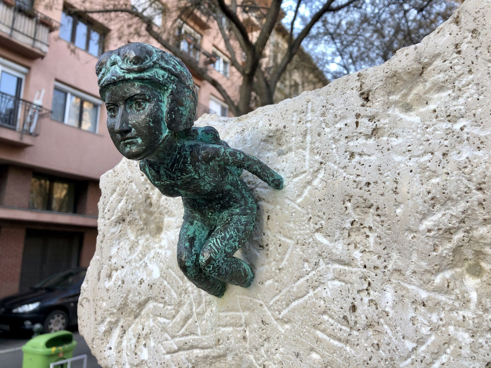

A Szenes Hanna miniszobor egy apró bronzszobor, amely Budapest VII. kerületében, a Szenes Hanna park kerítésénél található. Az alkotás a közismert gerilla-szobrász, Kolodko Mihály munkája, aki városszerte elhelyezett miniszobraival a városi tér rejtett művészeti rétegét hozza közelebb a járókelőkhöz.
A szobor Szenes Hannát ejtőernyős felszerelésben ábrázolja, amint éppen ugrásra készül. A figura mögött egy Magyarország-sziluett látható, amelyet mészkőből faragtak ki, erős szimbolikus kapcsolatot teremtve a történelmi haza és az egyéni sors között.
Szenes Hanna (Hannah Szenes vagy Cháná Szenes) 1921-ben született Budapesten. 1939-ben emigrált a Brit Mandátum alatti Palesztinába, majd a brit ejtőernyős alakulat tagjaként vállalt szerepet a második világháború idején, hogy segítséget nyújtson a náciellenes ellenállásnak és az üldözötteknek.
Bár hivatalos küldetését törölték, 1944-ben önként indult Magyarország felé, ahol elfogták, megkínozták és kivégezték. Mindössze 23 éves volt. Bátorsága, hűsége és költészete – köztük legismertebb verse, a „Boldog a gyufa, mely lassan ég” – Izraelben és világszerte a hősiesség szimbólumává tette.
Kolodko Mihály ezzel az alkotással nem csupán egy történelmi személynek állít emléket, hanem kortárs társadalmi üzenetet is közvetít. A szobor a Wonder Woman Budapest kampány részeként készült, amely arra hívta fel a figyelmet, hogy Budapest közterein aránytalanul kevés női hős jelenik meg.
A Szenes Hanna miniszobor így egyszerre történelmi emlékeztető, művészeti gesztus és erkölcsi állásfoglalás: kis mérete ellenére erőteljes jelentéssel bír Budapest kortárs városi emlékezetében.
